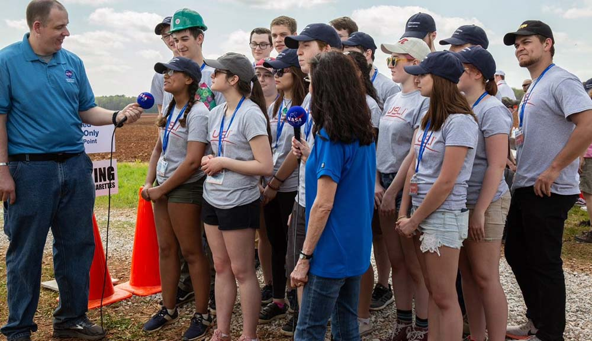
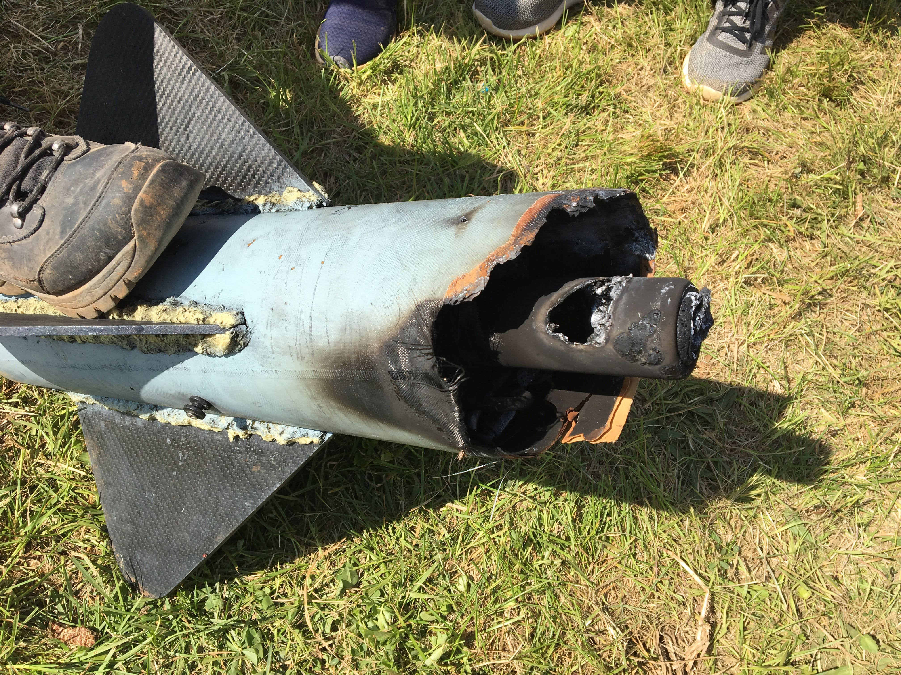
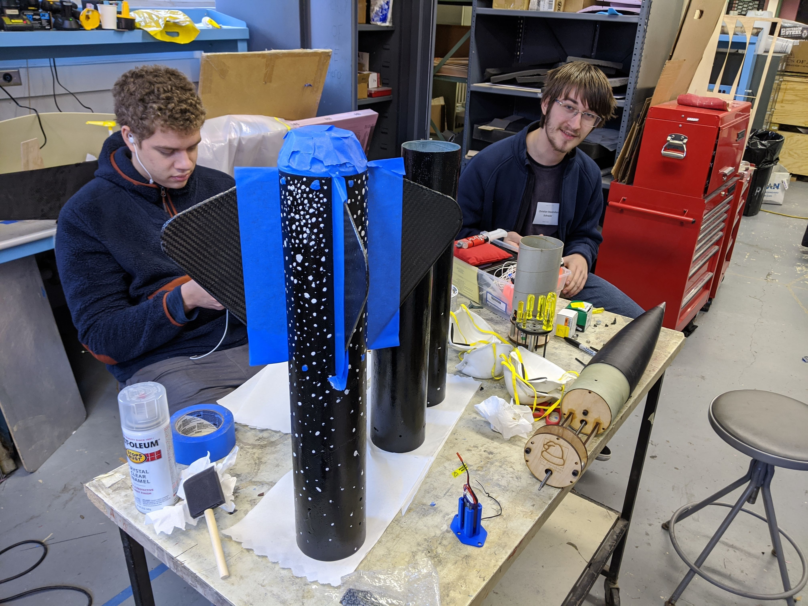

NASA University Student Launch Initiative
Documentation Officer, Avionics Lead, Ongoing
Captain, 2019-2020
Co-Founder, Safety Officer, 2018-2019
Pictured: Phoenix, the team's full scale rocket, takes off from Lake Winnipesaukee, February 2020.
Pictured: Phoenix, the team's full scale rocket, takes off from Lake Winnipesaukee, February 2020.
University Student Launch Initiative (USLI) is a NASA competition in which team's design, build, test, and fly a rocket to a target altitude, usually between 4000 and 5000 feet, before deploying a payload to complete a mission. This mission changes year to year. The competition mirrors the NASA design life cycle, requiring teams to submit a proposal to be accepted to the competition before going through several design reviews. All of this requires thorough documentation, detailed analysis, and smart design and planing to get done.
WPI USLI is the largest subcommittee of the WPI student branch of the AIAA. Through the competition, the team educates its members and provides an excellent introduction to engineering for the many freshmen who join.
The WPI USLI team was founded in 2018 by Caroline Kuhnle as Captain, Krystina Waters as Systems Integration and Rocket Lead, and Myself as Safety Officer. While WPI had competed in rocketry competitions before such as Battle of the Rockets, USLI was a significant step up. We had to figure out how to build a rocket to fly four times higher than anything we had built before. Through many stressful situations and close calls, the team managed to pull through and make it all the way to the competition. Not every rookie team meets all the deadlines to qualify.
As Safety Officer, my role on the team was to ensure that our rocket and payload was safe to fly and the safety of members at all activities. I did a lot of hazard analysis, failure modes and effects analysis, and other forms of risk analysis.
NASA TV interviews the team shortly before launch. I can be seen wearing the green hard hat.
After just managing to finish last minute repairs, the team got to the launch pad. When it was finally our turn to launch, the rocket flew to around 800 feet before exploding. The cause was rather quickly identified to be a manufacturing defect in the motor we had bought. Even though it wasn't something we could have predicted, it was still a little sad to see the rocket we had spent so much time on burn up. While it was disappointing, we had learned a lot from the competition and talking with other teams.
The bottom part of the rocket recovered after CATO. The hole in the aluminum motor casing shows where the defect occurred.
For our second competition year, I was elected as Captain. Starting my term, I set expectations, codified team procedures, and improved team structure. The team I lead was comprised of 9 other officers and 44 general members. Thanks to the lessons we learned in the last year, the team significantly improved in many ways. We improved work delegation, design quality, and outreach.
Me (left) and Payload Lead Thierry De Crespingy (right) work to finish Solstice, the team's subscale rocket.
Overall, the year was successful, however, due to Covid-19, NASA had to cancel the last segment of the competition. While launch week never happened, the team did meet every design review deadline. Phoenix, our full scale rocket, was completed and flew one test launch which, despite a non-catastrophic motor defect, was overall successful. Not everything was perfect. Our documentation could still be improved and there was a problem in the payload deployment mechanism that went uncaught for too long. Despite that, the quality of our engineering saw huge overall improvements. Thanks to the lessons we learned the previous year, we had an excellent competition year, even if the competition itself was canceled.
The team is taking the summer to prepare for next year's competition. Due to the ongoing pandemic, the exact plans are still uncertain. We are running some virtual workshops for members over the summer of which I am teaching a few. I have been elected to serve as Documentation Officer where I hope to improve the quality and consistency of our documentation. Additionally, I have been appointed as Avionics Lead for which I will lead a subteam to work on telemetry, tracking, and other avionics systems.